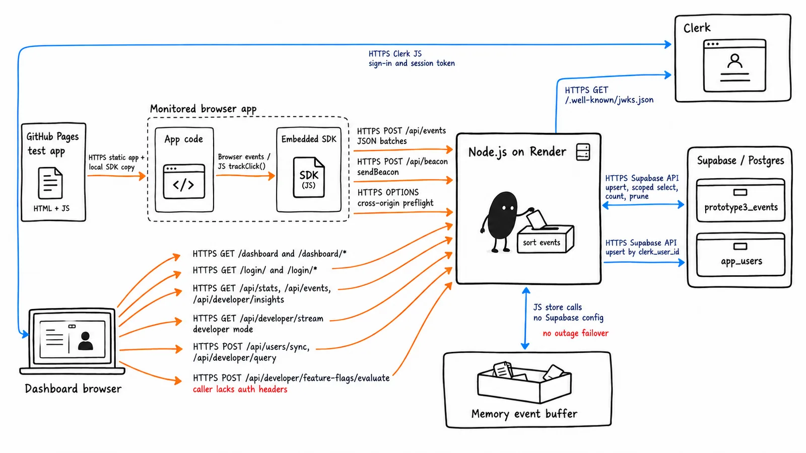

Watchtower
Our team built a small error and performance monitor: drop a script into a web app and its errors, slow routes, and clicks show up on a dashboard.
- Result
- Backend deployed on Render, with a test app on GitHub Pages sending it events.
- Role
- Data and backend logic owner
- What I did
- I wrote the shared event schema and API contract and the first version of Gmail error alerts (tested locally, never shipped). I also brought Clerk sign-in into the final prototype, wired up the timezone selector, fixed the profile and lint errors, and rewrote the README setup guide.
- Team
- CSE 110 group 9
- Stack
- JavaScript, Node.js, Supabase (Postgres), Clerk, Gmail API, Jest, Playwright, Render
What it does
A dependency-free browser SDK captures JavaScript errors, clicks and custom events, route changes, and page-load timing, then sends them in batches to a Node.js backend on Render. The backend stores events in Supabase (Postgres) and serves a dashboard behind Clerk sign-in, where each user only sees their own apps' data. Errors and metrics are tagged with a deploy version, so you can tell which release made things worse.

One contract for every prototype
Early on, the team split into groups building competing prototypes. They could only be compared fairly if they sent and accepted the same events, so I wrote the shared event schema and API contract (v1) that every prototype followed. The goal was that either team's backend could serve either team's frontend with no changes.
Every event has the same envelope: three required fields (type, timestamp, data), optional context the SDK fills in (sessionId, userId, deployVersion, appName, url, route), and a receivedAt the server adds on ingest. The server normalizes every event to that envelope before it writes to Supabase, so errors, performance timings, and clicks are stored in one shape and queried the same way. Later I audited the SDK and server against the spec field by field. Everything was captured, with two small labeling gaps in feedback and logout events, which I documented.
I also designed the backend event flow in the contract. POST /api/events takes a batch and accepts what it can: events that fail the envelope check are dropped and counted in a rejected field, and the valid ones are still stored. Only a body that isn't JSON gets a 400. Reads go through GET /api/events (filter by type, deploy version, and limit) and /api/stats. v1 also specced a server-sent events stream, but the final prototype's dashboard polls for stats every 3 seconds instead.
Sign-in and alerts
Sign-in
I researched Clerk for sign-in, and Resend versus the Gmail API for alert emails. A teammate wrote our first Clerk integration. When we picked the final prototype, I brought Clerk sign-in into it: I repointed the sign-in redirect and config, moved the dashboard auth guard over, and added the signed-in user label and a Logout button. Later I fixed the profile page. It showed a hardcoded name, and now it shows the signed-in user's name and initials, scoped to their user ID.
Error-spike emails
I built the first version of email alerts with the Gmail API (OAuth2 through Nodemailer). When an incoming batch has at least ERROR_ALERT_THRESHOLD errors (default 5), the server emails the route, the deploy version, and the first error message. Anyone who can trigger an error in a monitored app controls that message, so I escaped the HTML before it goes into the email.
The threshold counts errors per batch, not per minute, so it's a rough spike signal. We tested alerts only locally. In September 2026 a teammate's security review removed the mailer from main, because a public route for registering alert recipients made a Nodemailer advisory reachable.
Smaller fixes
- Wired the dashboard's timezone selector through to event timestamps and the backend, with unit tests for the event store.
- Fixed lint failures that were blocking CI.
- Rewrote the README's project structure and setup guide for the final prototype.